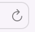

Як зробити Сафарі своїм улюблений браузером на мак? Багато лайвхаків..
Сафарі (Safari) - це дуже зручний і простий у використанні браузер для користувачів macOS. Альтернатива Google Chrome від Apple.
Сафарі - встановлений за замовченням на всіх макбуках та компʼютерах мак, щоб відкрити браузер та почати роботу в інтернеті необхідно натиснути на іконку сафарі - в нижній панелі, яка ще називається Док (Dock).
Навігація за розділами:
- Сафарі на мак: Як оновити сторінку? (перезавантаження сторінки)
- Сафарі на мак: Як відкрити нове вікно?
- Сафарі на мак: Відкрити вікно в приватному режимі (режимі інкогніто)
- Сафарі на мак: Відкрити нову вкладку
- Сафарі на мак: Відновити закриту вкладку
- Сафарі на мак: Упорядкування та швидкі дії з вкладками через "Меню вкладок"
- Сафарі на мак: Зручний перегляд вкладок - "Огляд вкладок"
- Сафарі на мак: Перемикання між вкладками гарячі клавіші
- Сафарі на мак: Перемикання між вікнами гарячі клавіші
- Сафарі на мак: Пошук по сторінці
- Сафарі на мак: Як закріпити вкладку
- Сафарі на мак: Як змінити масштаб
- Сафарі на мак: Як переглянути історію браузера
- Сафарі на мак: Як очистити історію браузера, кеш, файли cookie
- Сафарі на мак: Додати сайт до закладок
- Сафарі на мак: Додати сайт для улюблених
- Сафарі на мак: Перегляд сайтів в режимі зручного читання
- Сафарі на мак: Додати сторінки в Читанку
- Сафарі на мак: Використовуйте бокову панель для упорядкування
- Сафарі на мак: Використовуйте меню на нижній панелі Док
- Сафарі на мак: Як встановити розширення
- Сафарі на мак: Параметри (змінити налаштування)
- Сафарі на мак: Де зберігаються Завантажені(викачані) файли?
Лайвхаки по використанню Cафарі на мак:
Коли ви відкриваєте Сафарі - відкривається нове вікно браузера. В адресній строці вікна можна ввести адресу сайти щоб перейти на нього. Можна одночасно відкрити декілька вікон сафарі і в кожному вікні можна додати багато вкладок з різними сайтами.
1. Як оновити сторінку? (перезавантаження сторінки):
Щоб оновити сторінку, просто натисніть комбінацію клавіш "COMMAND R" або натисніть зправа від адреси сайту полукруглу стрілочку - "Перезавантажити цю сторінку" 
2. Відкрити нове вікно
Щоб відкрити нове вікно необхідно обрати в меню "Файл" >> "Нове вікно". або комбінацію клавіш "COMMAND N" на клавіатурі.
3. Відкрити вікно в приватному режимі (режимі інкогніто):
Щоб відкрити сторінку в режимі інкогніто(приватному режимі) , оберіть в меню "Файл" >> "Нове приватне вікно" або натисніть комбінацію клавіш Command+Shift+N. Вкладка інкогніто відкриється в новому вікні, інформація про відвідані сторінки та файли cookie на цій вкладці не будуть збережені. Це корисно, якщо ви хочете переглянути вміст сайту, не залишаючи слідів у своєму браузері.
4. Відкрити нову вкладку
Щоб відкрити нову вкладку, натисніть плюс на панелі вкладок або оберіть в меню "Файл" >> "Нова вкладка", або затисніть комбінацію клавіш "COMMAND Т".
5. Відновити закриту вкладку:
Якщо ви закрили вкладку випадково, не панікуйте, її можна просто відновити. Для цього в меню "Історія" оберіть "Відкрити останнє закрите вікно" або натисніть комбінацію клавіш "COMMAND SHIFT T" або "COMMAND Z" для відновлення останньої закритої вкладки.
Також в меню Історія можна переглянути "Нещодавно закриті" вкладки.
6. Упорядкування та швидкі дії з вкладками через "Меню вкладок"
Натисніть правою кнопкою миші на вкладці, щоб відкрити меню, де можна швидко закрити зайві вкладки окрім активної, або закрити всі вкладки зправа.
Також в цьому меню обравши розділ "Упорядкування вкладок" можна відсортувати вкладки за назвою або за вебсайтом. Наприклад всі вкладки ютюб будуть поруч, що спростить навігацію між вкладками.
Також в цьому меню можна створювати групи вкладок для зручного управління.
Всі опції меню вкладок:
- Закріпити вкладку
- Дублювати вкладку
- Закрити вкладку
- Відкрити вкладку в новому вікні
- Перемістити до групи вкладок
- Упорядкування вкладок
7. Зручний перегляд вкладок - "Огляд вкладок":
Коли відкрито багато вкладок зручно їх переглянути можна в режимі "Показати огляд вкладок". Також в цьому режимі можна шукати вкладку за сайтом або заголовком в меню "Пошук вкладок".
В меню "Перегляд" оберіть "Показати огляд вкладок".
8. Перемикання між вкладками (гарячі клавіші)
Щоб перемикатися між вкладками за допомогою клавіатури, натисніть Control+Tab. Це дуже зручно, коли ви маєте відкрито багато вкладок і хочете швидко перемикатися між ними.
9. Перемикання між вікнами (гарячі клавіші)
Щоб зручно перемикатись між вікнами сафарі за допомогою клавіатури натисніть комбінацію клавіш COMMAND ~
10. Пошук по сторінці:
Іноді вам треба знайти якийсь текст або слово на сторінці, для цього можна скористатись функцією пошуку в сафарі обравши в меню "Редагування" розділ "Пошук" за допомогою комбінації клавіш "Command F"
В меню пошуку можна обрати тип пошуку: - містить (містить текст пошуково запросу) - починається з (починається з пошукового запросу)
11. Закріпити вкладку
Закріпити вкладку - це зручна функція для сайтів які ви багато використоваєте, якщо ви закріпили вкладку вона буде першою у вікні браузера зліва. Якщо ви відкриєте нове вікно - в ньому будуть автоматично відкриті закріплені вкладки.
Натисніть на вкладці правою кнопкою та оберіть в меню "Закріпити вкладку" або оберіть цей розділ в верхньому меню "Вікно".
12. Змінити масштаб:
Щоб збільшити чи зменшити масштаб сторінки, натисніть "Command +" або "Command -". Це зручно, коли текст на сторінці занадто малий або треба збільшити зображення щоб роздивитисб деталі. Або навпаки зменшити, щоб сторінка вмістилась на екран.
Масштабувати сторінку також можна за допомогоб жесту тачпаду - розсування двох пальців один від одного.
13. Переглянути історію браузера:
Щоб переглянути свою історію відвідувань в Safari, натисніть меню Історія верхньої панелі меню або використовуйте комбінацію клавіш Command + Y. У відкритому вікні історії можна переглянути всі останні відвідані сторінки, використовуючи вкладки зверху вікна. Також ви можете знайти конкретну сторінку, використовуючи поле пошуку в правому верхньому куті вікна історії.

14. Очистити історію браузера(видалити, очистити кеш, файли cookie):
Якщо вам не потрібна історія відвідувань, ви можете її очистити.
В верхньому меню "Історія", оберіть "Очистити історію відвідувань", далі виберіть період часу, за який потрібно очистити історію, і натисніть кнопку Очистити.
При видаленні історії ви також видаляєте файли кешу.
Кеш браузера Safari - це місце, де тимчасово зберігається інформація з відвіданих вами веб-сайтів, щоб швидше завантажувати їх при наступному відвідуванні. Коли ви переходите на веб-сторінку, браузер зберігає туди деякі дані, такі як зображення, тексти і скрипти, щоб при наступному відкритті сторінки не треба було повторно вивантажувати ці дані з Інтернету.
Видалення кешу у браузері Safari може бути корисним з кількох причин:
Очистка простору на диску: Кеш Safari може займати значну кількість простору на диску, особливо якщо ви користуєтесь браузером протягом тривалого часу або відвідуєте багато веб-сторінок з великою кількістю зображень та відео.
Виправлення проблем з відображенням веб-сторінок: Інколи кеш браузера може стати причиною проблем з відображенням веб-сторінок, таких як помилки завантаження або неочікувані помилки JavaScript. Видалення кешу може допомогти виправити ці проблеми.
Забезпечення приватності: Кеш Safari може зберігати інформацію про веб-сторінки, які ви відвідали, та інші дані, пов'язані з вашою активністю в Інтернеті. Якщо ви бажаєте зберігати свою приватність, видалення кешу може бути корисним, оскільки це допоможе знизити кількість інформації, яку зберігає браузер.
Видалення кешу Safari може призвести до деяких незручностей, зокрема:
Повільність завантаження веб-сторінок: коли ви видаляєте кеш Safari, він видаляє всі збережені на вашому пристрої файли, які використовуються для швидшого завантаження веб-сторінок. Це означає, що після видалення кешу, веб-сторінки можуть завантажуватися повільніше.
Відсутність доступу до збережених паролів та інформації автозаповнення: Safari також зберігає дані автозаповнення та збережені паролі для веб-сайтів. Якщо ви видаляєте кеш, то також втратите доступ до цих даних. Вам доведеться вручну вводити всю необхідну інформацію знову.
Видалення історії перегляду: видалення кешу також призведе до видалення вашої історії перегляду. Це може бути проблемою, якщо вам потрібно знайти сторінку, яку ви відвідали раніше, історія буде більше не доступною.
Втрата налаштувань: видалення кешу може вплинути на деякі налаштування Safari, такі як розмір шрифту, мову відображення та інші. Вам доведеться знову встановлювати ці налаштування, якщо вони були видалені.
Потреба вводити дані знову: якщо ви видаляєте кеш, то вам доведеться вводити дані для входу на веб-сайти знову, якщо вони не збережені в вашому менеджері паролів.
15. Використовуйте закладки для того щоб зберігти адреси сайтів
Якщо ви хочете зберігти адресу сайтів для доступу в майбутньому, можна додати їх до закладок для швидкого доступу. Для цього натисніть Command+D або виберіть "Додати до закладок" з меню "Закладки".
16. Додавайте найбільш відвідувані сайти до списку Улюблених
Сайти, які ви відвідуєте найчастіше можна додати до списку Улюблені, і в кожному новому вікні Сафарі буде швидкий доступ до них.
Відредагувати список Улюблені можна у верхній панелі меню в розділі Закладки >> Улюблені.
17. Перегляд сайтів в Режимі зручного читання:
Цей режим буде корисним для комфортного перегляду сторінок з великою кількістю реклами або маленьким незручним шрифтом для читання. А також ви чатаєте статтю або великий текст. Використовуйте Режим зручного читання (знак книжечка зліва від адреси сайту) - який дозволяє переглядати сторінки з більш комфортним шрифтом без реклами та інших зайвих елементів, зробивши читання більш комфортним.
18. Додавайте сторінки в Читанку. Зберігайте тексти для подальшого зручного читання.
Якщо ви хочете зберегти сторінку для пізнішого читання, скористайтеся функцією "Читанки" - в верхньому меню "Закладки" оберіть "Додати до читанки" або навівши курсор на адресну строку зліва від адреси сайту, натисніть на кпопку "Додати до читанки".
Читанку можна переглядати обравши в верхньому меню "Перегляд" >> "Показати бокову панель читанки" Щоб видалити сторінку з Читанки, натисніть на іконку "Видалити з Читанки", яка з'явиться, коли ви наведете курсор на сторінку в Читанці.
19. Використовуйте бокову панель
За допомогою бокової панелі можна перемикатись між групами вкладок, також в боковій панелі є доступ до Закладок та Читанки. Шоб відкрити бокову панель необхідно у верхньому меню "Перегляд" обрати "Показати бокову панель".
В меню бокової панелі можна переглянути наступні розділи: - Кількість вкладок та Перехід до режиму огляду вкладок - Поширено для вас - Групи вкладок - Закладки - Читанка
20. Використовуйте меню правої кнопки миші нижньої панелі Док, для швидких дій.
Натиснувши правою кнопкою миші(або двома пальцями на тачпаді) на іконці Сафарі в нижній панелі екрану Док(Dock) можна виконати основні функції:
- Перемикатися між вікнами Сафарі
- Відкрити нове вікно
- Відкрити нове приватне вікно
- Сховати вікно
- Завершити (закрити вікна сафарі)
21. Як встановити розширення для Сафарі
Натисніть в верхній панелі на меню Сафарі. Далі оберіть "Розширення Сафарі".
Відкриється AppStore для розширень Сафарі. Тут через пошук або рекомендації можна обрати необхідне розширення.
Після того як ви обрали розширення натисніть Отримати, а потім Інсталювати.
22. Параметри Сафарі (зміна налаштувань)
Натисніть в верхній панелі на меню Сафарі. Далі оберіть "Параметри".
Відкриється меню "Параметри", де можна обрати необхідні вам налаштування за наступними розділами:
- Загальні
- Вкладки
- Автозаповнення
- Паролі
- Пошук
- Безпека
- Приватність
- Веб сайти
- Розширення
- Експертні
Для прикладу розглянемо декілька налаштувань у вкладці Загальні:
Встановити сторінку або декілька вкладок, які будуть відкриватись за замовченням, при відкритті нового вікна.
Налаштувати скільки часу зберігається історія браузера (за замовченням рік).
Змінити місце збереження файлів, які скачуються в браузері Сафарі.

23. Де зберігаються Завантаження (файли викачані з веб сторінок)?
За замовченням Завантаження (файли, які ви скачуєте через браузер Сафарі) зберігаються у папці "Викачане"(Downloads), яку можна переглянути в програмі Finder
Підсумок
Ці поради допоможуть вам більш зручно використовувати всі корисні функції браузера Сафарі та швидко впорядкувати, скруктурувати вкладки та вікна.
Читайте також: Як очистити кеш(історію) Сафарі на мак